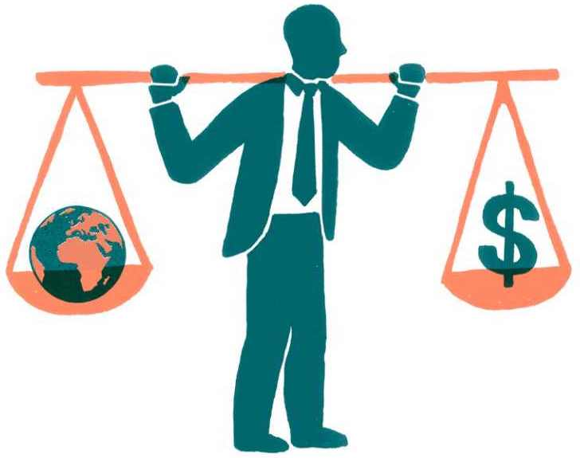
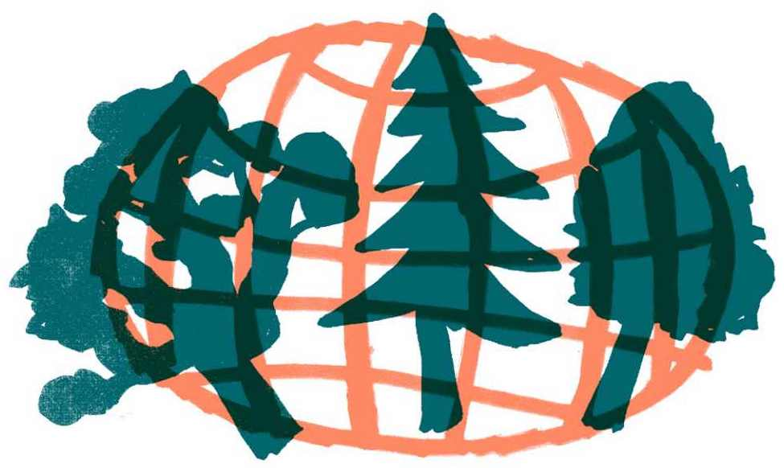

6.1 Jak dosáhnout systémové změny
Klimatická krize je proces pevně spjatý s tím, jak poslední stovky let funguje lidská společnost. Nereprezentuje pouze to, kolik lidstvo vypustilo skleníkových plynů, a o kolik stupňů se tím pádem oteplila planeta. Klimatická krize představuje například také selhání ve způsobu zacházení se zdroji, řízení států, fungování trhů i selhání ve snaze o spravedlnost a dodržování lidských práv. Na všechny tyto oblasti důsledky klimatické krize dopadnou. A pokud se chceme klimatické krizi postavit, musíme ve všech těchto oblastech zároveň hledat řešení.
Tato kapitola se věnuje systémovému myšlení. Vysvětluje, proč musíme s klimatickou krizí pracovat jako se systémovým problémem, který má příčiny ve více možných úrovních. První část textu popisuje teoretické přístupy k systémové změně a řeší, jak lze tyto přístupy promítnout do praxe. Druhá část pojednává o tom, jak je v kontextu klimatické krize potřeba uvažovat o ekonomice. Konec kapitoly je věnován roli přírody a jejímu vztahu k lidské civilizaci.
Proč je systémová změna nutná
Řešení klimatické krize je politická otázka, protože v rámci tohoto řešení potřebujeme změnit společnost. Bez změny fungování společnosti nedosáhneme důstojného přežití lidstva. Klima a pak i společnost se budou rozpadat a lidé budou umírat a trpět. Ukazuje se, že se rozsah opatření, která je potřeba zavést pro rychlé snížení množství emisí skleníkových plynů, dlouhodobě nedaří uskutečnit v podmínkách současného ekonomického systému globálního kapitalismu. A při těchto pokusech nám ubíhá čas, kterého máme žalostně málo.
Další pohled ukazuje, že se jedinci chovají podle toho, jaké chování v nich podněcuje systém – například lidé mohou jen stěží většinově nakupovat potraviny od menších lokálních zemědělců, když je nepůjde sehnat nejkratší cestou z práce a za dostupnou cenu. A pokud tedy chceme změnit chování většiny společnosti, je nutné nastavit systém tak, aby jedincům změnu chování umožňoval. Ukazuje se, že bez některých regulací toto nebude možné.

Hlavním protivníkem řešení klimatické krize je ekonomika založená na růstu, v rámci níž není možné dosáhnout potřebného rozsahu klimatických opatření, a to ani na naprosto nezbytné úrovni mitigace, tedy snížení množství vypuštěných skleníkových plynů. Přitom klimatická neutralita je pouze jedna část průřezového problému, který představuje klimatická krize. Pro účinné řešení takto komplexní výzvy je potřeba přemýšlet v kontextu změny celého systému.
Nejsem si jistá, že by se dalo rozsahu opatření, který je potřebný, dosáhnout v současném tržním systému. Ty škály jsou enormně odlišné. Rapidní dekarbonizace, která by byla potřeba, a rychlá a hloubková mitigace, je nepravděpodobná. Bez ohledu na to, kolik dotací v rámci současného systému těmto cílům věnujeme a jak zásadně změníme pobídky pro jednotlivé aktéry trhu.
Zuzana Harmáčková
Systémové myšlení a pákové body změny
Systémové myšlení umožňuje vnímat realitu rozvrstvenou podle dynamik, které lze popsat různými modely. Tyto modely mohou klimatickému hnutí pomoci hledat odpověď na to, jak „změnit systém, ne klima“.
Model ledovce, který vychází z teorie systémového myšlení ekoložky Donelly Meadows2, pracuje se čtyřmi úrovněmi systému. Špičku ledovce představují jevy pozorovatelné kolem nás, které stojí na zbylých částech ledovce schovaných pod hladinou – vzorcích, strukturách a mentálních modelech. Na úrovně pod hladinou (hlavně na „nejhlubší“ mentální modely) nesmíme zapomínat, pokud chceme dosáhnout změny fungování celého systému, a nikoli jen jeho projevů.3
Příkladem může být třídění odpadu, které je jistě velmi pozitivním jevem, ale pro řešení klimatické krize nestačí. Musíme dosáhnout změn v hlubších částech systému, jež povedou k proměně dnešního způsobu života i struktur společnosti, a skrze to ke snížení množství spotřebovávané energie a materiálu a celkového množství vzniklého odpadu. Jen tak bude mít změna reálný vliv i na řešení klimatické krize. Jinak pouze oddalujeme v čase náraz na fyzické limity naší planety.
Model cibule potom poukazuje na to, že jednotlivé úrovně jsou obalené dalšími – jedinci jsou obklopeni ekonomickým a společenským systémem. Klimatické hnutí může dosáhnout změn, pokud bude působit na chování jedinců, ale míra změny, které mohou jedinci dosáhnout, je limitovaná nastavením okolního systému. Jinými slovy, většina z nás nemůže každý den do práce dojíždět na kole, protože v České republice nemáme ulice přizpůsobené pro bezpečnou jízdu lidí na kole, jako tomu je například v Dánsku.
Lidé se ve svém každodenním jednání zaměřují na to, co potřebují, aby se protloukli svým každodenním životem. Těmto lidem říkáme, že se mají změnit, ale ono je opravdu těžké se změnit, když na to není připravená infrastruktura.
Julia Mildorfová Leventon
Pokud chce klimatické hnutí dosáhnout účinné systémové změny, musí rozložit síly a působit na všech úrovních systému najednou, nelze žádné části opomenout. Je potřeba měnit viditelné jevy na špičce ledovce, stejně jako vzorce, struktury a mentální modely pod hladinou. Je potřeba pracovat s jedinci „uprostřed cibule“ a zároveň působit na změnu prostředí, které tyto jedince obklopuje. Za tímto účelem je důležité navazovat různorodá spojenectví a dobře koordinovat své strategie.
Při hledání, na co se v jednotlivých úrovních zaměřit, je výhodné hledat pákové body. Tedy místa, na která se vyplatí působit, protože jejich posunutím dojde k velké změně ve fungování celé úrovně. Existují pákové body na hlubších i na mělčích úrovních systému. Pákové body v hlubších úrovních ledovce mají větší „pákový efekt“ na změnu celého systému, a nikoli jen povrchových jevů.4 Řadu pákových bodů se snaží popsat právě Klimavize.
Jak se systémové myšlení promítá do praxe
Je potřeba si uvědomit, že při řešení klimatické krize neexistuje jeden jasný pákový bod. Politika navíc nefunguje jako přímá realizace teoretických hypotéz a je těžké říct, co bude fungovat a s jakou mírou jistoty. Velkou roli hraje nespočet různých opatření a systém se musí změnit v mnoha směrech.
Jedním z narativů, který má na úrovni mentálních modelů velký vliv, je narativ o individuální svobodě. To, že vnímáme právo na uspokojování vlastních potřeb jako nadřazené zájmům celé společnosti, formuje i způsoby, jakými se snažíme řešit klimatickou krizi. Tento způsob pohledu brání systémové změně a směřuje k budoucnosti, ve které se preferují polovičatá řešení. Uhlíková stopa společnosti se pak snižuje pomalu, nedostatečně a za cenu prohlubování jiných problémů. Prakticky to znamená, že se zabýváme tím, jak udělat elektrické automobily dostupnými pro všechny, přestože je pákový efekt pro změnu systému a řešení klimatické krize velmi malý. Elektromobily jsou velmi energeticky a materiálově náročné a jdou přímo proti udržitelným urbanistickým konceptům, jakými jsou například města krátkých vzdáleností.5
Na úrovni mentálních modelů také působí narativy, které přenášejí odpovědnost na každodenní volby jedinců jako spotřebitelů a odklánějí pozornost od toho, co je pro vyřešení klimatické krize opravdu potřeba udělat. Je to podobné, jako když po lidech chceme, aby nákupem jídla podporovali malé zemědělce, přestože tu existuje politika, která přiznává větší dotace těm zemědělcům, kteří hospodaří na větší ploše půdy. Změnit tuto politiku by mělo větší pákový efekt na změnu celého systému.
Lidem v České republice přijde nefér, když jim někdo říká, že mají například méně létat letadlem. Jenže u nás se průměrně nelétá letadlem tak často jako v jiných bohatých zemích.6 Veřejnost má právo být na tuto nespravedlnost naštvaná, protože ve skutečnosti deset procent nejbohatších lidí na světě (tj. lidé s vyšším příjmem než cca 68 tisíc korun měsíčně) má na svědomí více než polovinu emisí oxidu uhličitého vypuštěných do atmosféry mezi roky 1990 a 2015. A nejbohatší jedno procento lidí zodpovídá za patnáct procent těchto emisí.7
Z toho plyne, že ani masivní změna chování většiny běžných lidí nebude mít na množství vypuštěných skleníkových plynů takový vliv, jako když se systémově podaří změnit chování bohatých a mocných jedinců nebo když se přestane používat růst finanční hodnoty výroby, spotřeby a služeb (tedy hrubý domácí produkt = HDP) jako měřítko úspěchu.
Další narativ, který působí na úrovni mentálních modelů, je pojetí klimatické krize jako pouze ekologického nebo fyzikálního problému, který je potřeba vyřešit změnou technologií. Klimatické hnutí musí změnit zarámování debaty a argumenty přírodních věd doplnit také o společenský dopad a vize vhodných sociálních politik. Rozvinutí tohoto rozměru mohou pomoci diskuze o konkrétních dopadech změn klimatu na životy lidí.
Klimatická věda je politická a frustruje mě, když se o ní bavíme jen jako o záležitosti přírodních věd. Tím posilujeme status quo.
Julia Mildorfová Leventon
Jaké pákové body může klimatické hnutí použít, aby dosáhlo změn v těchto mentálních modelech? Příkladem může být překlenutí mezery v tom, jaký význam přiklání změnám klimatu veřejnost a jak o nich jedná politická reprezentace. Výzkumy ukazují, že lidé podporují nutnost řešit klimatickou krizi, ale potřebná akce se neodráží v rozhodování volených zástupců.8 Klimatické hnutí se může zaměřit například na práci s politiky a političkami a zvyšovat jejich povědomí o klimatické krizi a její komplexitě. Pokud by se podařilo posunout uvažování lidí v Poslanecké sněmovně, Senátu, ve vládě, ale také na úrovni obecních zastupitelstev, starostů, starostek a radních, změna by se mohla projevit na celé strukturální úrovni systému.
Ekonomický systém jako příčina klimatické krize
Klimatickou krizi nelze vnímat jako problém zúžený na velké množství emisí skleníkových plynů v atmosféře. Jestliže jednou uspějeme v mitigaci změn klimatu a podaří se nám dosáhnout klimatické neutrality, budeme se i tak muset vypořádat s dalšími rozměry klimatické krize a překročení planetárních mezí – se ztrátou biodiverzity, s narušením cyklů dusíku a fosforu, sociálními a ekonomickými dopady změn klimatu apod. Změny klimatu mohou být hlavním motorem debaty o řešení těchto problémů propojených do širšího pojmu jedné komplexní klimatické krize, ale v řešení je potřeba jít dále za samotnou ochranu klimatu.
Když se bavíme o tom, co má smysl dělat, tak klimatická krize není jediná, která tady je. Určitě nejde říct, že snížíme emise a všechno bude dobré. Jde o komplexní problém našeho ekonomického systému a nemá smysl z toho jednotlivé krize oddělovat.
Eva Fraňková
Jestliže je klimatická krize pevně propojená se systémem fungování společnosti, pak také nutně souvisí se systémem ekonomickým. Ekonomika je v současné podobě extrémně závislá na fosilních palivech a pro ochranu klimatu bude nezbytná její transformace na ekonomiku klimaticky neutrální. To však nebude stačit. Klimatickou krizi v širším pojetí způsobují základní vlastnosti a nástroje aktuálního ekonomického uspořádání – tlak na ekonomický růst, velikost firem a jejich priority, systémy zdanění apod.
Klimatické hnutí by se proto mělo snažit měnit hodnoty, na kterých je ekonomický systém založený. Posouvat vnímání úspěchu a vyspělosti států od peněz, růstu a HDP směrem k životní spokojenosti a tomu, co ji opravdu způsobuje. Je reálné, abychom všichni žili ve fyzických mezích naší planety a zároveň si udrželi důstojný životní standard, pokud postavíme náš ekonomický systém na jiných hodnotách než nyní. Příkladem těchto hodnot mohou být základní teze tzv. nerůstu, který propaguje hodnoty environmentální spravedlnosti, péče, skromnosti, soudržnosti a sebeorganizování.10
Právě nerůstová témata mohou klimatickému hnutí umožnit najít společnou řeč s veřejností. Více volného času a rozšíření služeb veřejnosti (jako veřejná doprava, urbanismus a udržitelná infrastruktura, přístup ke zdrojům) umožňují lidem žít kvalitnější život s nižším množstvím emisí uhlíku a mohou to být efektivní klimatické politiky. Kratší pracovní doba a snížení životního tempa znamená pozitivní dopad nejen na ochranu klimatu, ale také na lidské zdraví. Klimatické hnutí tedy může stát v pozici toho, kdo iniciuje debaty odpovídající na otázky: co nás dělá skutečně šťastnými? Jaký bychom chtěli život, kdyby to bylo jen na nás? S jakou vizí budoucnosti bychom byli spokojeni?
Společnost je rozpadlá. Lidé se rozvádějí a jsou na sebe v soukromém životě zlí, protože se za celý týden nepotkají. Jeden pracuje od šesti do dvou, druhý od dvanácti do osmi. Zkrácení pracovní doby může oslovit každého. Je ale potřeba mít dobře připravené příklady ze zahraničí a podložené argumenty – například kolik peněz díky tomu ušetříme, protože lidé budou méně nemocní.
Petra Kolínská
Zelený růst není řešením
V situaci, kdy naopak nechceme dělat změny na úrovni celého systému a nemíříme na přeměnu mentálních modelů fungování společnosti a ekonomiky, zůstávají řešení mělká a není možné dosáhnout opravdu spravedlivé transformace na klimaticky neutrální budoucnost. Bohužel právě k tomu směřuje tzv. zelený růst.
Zelený růst pracuje s myšlenkou, že je možné zachovat ekonomický systém založený na růstu HDP a zároveň přitom snižovat tempo zatížení životního prostředí, čerpání zdrojů a vytváření odpadu. Počítá s tzv. decouplingem, tedy „rozpojením“ aktuálně spojené křivky ekonomického růstu a dopadů na životní prostředí.11 V současné době ale neexistuje žádný empirický důkaz, že by něčeho takového bylo možné dosáhnout v potřebné míře a s potřebnou rychlostí, tím méně na globální úrovni, přestože aktuální klimatické politiky s touto teorií pracují jako s jasnou a racionální volbou. Studie však ukazují jako velmi nepravděpodobné, že by se při ekonomickém růstu podařilo snížit emise uhlíku dostatečně rychle na to, aby se povedlo zabránit oteplení planety o 2 °C od doby předindustriální (což je cílem Pařížské dohody).12
V Glasgow na letošní Konferenci OSN o změně klimatu jsme se definitivně odklonili od odmítání ochrany klimatu. Zároveň jsme zvolili cestu klimatického kolonialismu a posilování nespravedlností. Cíle klimatické politiky mají poměrně širokou podporu, ale problémem je to, kdo se podílel na jejich tvorbě. V závěrečné dohodě dominují technologie a taková řešení klimatické krize, které odráží velmi západocentrické vidění světa.
Julia Mildorfová Leventon
Představa, že nás z klimatické krize dostane pouze technologický pokrok a zvýšení efektivity bez proměny fungování ekonomického systému, nekoresponduje s tím, co ukazují modely možné budoucnosti.13 Zelený růst i kvůli své materiálové náročnosti v budoucnu narazí na další meze naší planety. Klimatické hnutí by proto mělo vyprávět takové narativy budoucnosti, které obsahují spíše nerůstové scénáře a politiky, i když je zřejmé, že zelený růst působí jako jednodušší (avšak nedostatečné) řešení změn klimatu. Zelený růst je pro politickou reprezentaci, vlivné lidi i firmy na první pohled přijatelnější volbou, jelikož nenabourává současné struktury moci a hodnoty bohatého Severu. I proto většina řešení, o kterých se aktuálně politicky vyjednává, obsahuje vize zeleného růstu.
U ekonomického systému bez nerůstu sice také nevíme přesně, jak by fungoval a jestli je globálně dosažitelný, ale víme, že s ním dává smysl experimentovat a zavádět jej do praxe. Řada podobných experimentů se již děje a mají potenciál zvyšovat lidem kvalitu života a učinit pro ně ekologickou transformaci přitažlivější (např. zkrácení pracovního týdne14).
Ačkoli tedy nevíme přesně, jak by fungoval ekonomický systém bez růstu, je na místě s nerůstovými návrhy experimentovat a zkoušet je zavádět do praxe. Tím spíš že některé z nich – jako zkracování pracovního týdne – mohou lidem zvýšit kvalitu života, a učinit tak ekologickou transformaci pro lidi přitažlivější.
Klimatické hnutí může prosazovat ekonomické cíle
Fungování českého trhu aktuálně určuje podoba ekonomického trhu v zahraničí. Spravedlivá transformace tak může být příležitostí, jak nad situací u nás získat větší kontrolu – například podporou lokálního trhu a většího vlivu veřejného vlastnictví oproti zahraničnímu. Pevné struktury ekonomiky založené na finančním i mocenském vlivu však nebude lehké proměnit.
V Evropské unii už je vidět mírný posun na hodnotové úrovni, která sice stále pracuje s ekonomickým růstem, ale v rámci konkrétních opatření má za cíl fungování trhu částečně měnit. Příkladem takových opatření může být klasifikace udržitelných aktivit (taxonomie)17 nebo zavádění unijního právního rámce pro přiměřené minimální mzdy.18 Klimatické politiky EU mají ambice dělat systémové změny, ale stále znamenají „posun“ jiným směrem v rámci stejné růstové vize.
Evropská unie nyní jistě nesměřuje k nerůstu, ale posun debaty o ekonomice směrem k hodnotám spravedlivé transformace může být pro české prostředí inspirující. A v mnoha ohledech samozřejmě také závazný. Klimatické hnutí se pak může k těmto příkladům konkrétních politik alespoň částečně vztahovat a pracovat s nimi při prosazování změn v České republice. Je však nutné i kroky Evropské unie vnímat kriticky a sledovat jejich hloubku.
Pro přijetí evropských klimatických politik českou veřejností bude naprosto stěžejní, aby opatření neměla negativní dopad na domácnosti a zranitelné skupiny obyvatel. Ekonomická transformace musí být spravedlivá a také dobře naplánovaná. Je jisté, že tak velké změny zaberou delší dobu, ale klimatické hnutí by se mělo snažit být tím, kdo spravedlivou transformaci prosazuje a na celý proces dohlíží.
Kromě toho ale může klimatické hnutí začít prosazovat konkrétní politiky, procesy a opatření, jež povedou k řízené přeměně ekonomiky. Protože to je pro řešení klimatické krize zásadní. Může to být podpora přesunu investičních financí z fosilních paliv jinam20 (divestment), prosazování nového systému zdanění, tlak na změnu indikátorů úspěšnosti a odpovědnosti firem nebo třeba podpora regionálních ekonomik. Důležité však je uvědomit si, že i tohle může být agendou klimatického hnutí.
Dnes se bere jako normální, že firma má maximalizovat zisk, ale tuhle logiku je potřeba opustit. I legislativa většině právních forem maximalizaci zisku přímo předepisuje. To potřebujeme změnit. Je třeba zviditelňovat jinak fungující firmy a ukazovat, že tu vždycky byly podniky s jinými cíli než jenom zisk. Je důležité je podporovat, aby nešlo o výjimečnou alternativu, ale naopak o samozřejmost.
Eva Fraňková
Příroda je aktér i podmínka existence
Pokud má klimatické hnutí přispět ke změnám fungování systému na úrovni mentálních modelů, jeho zásadní role může ležet v otevírání představivosti a posouvání hranic možného. Nízká úroveň imaginace je totiž velkou brzdou pozitivních změn. Jestliže si již nyní na evropské úrovni jako jeden z ekonomických cílů volíme množství vypuštěných emisí uhlíku, proč by takovým ekonomickým cílem nemohly být i další nefinanční hodnoty?
Ekonomiku musíme vnímat v souvislosti s ostatními procesy, které na planetě probíhají. Nejde jen o pouhou finanční nebo materiálovou směnu, protože fungování ekonomiky závisí na fungování celého planetárního metabolismu a zachování ekosystémových služeb. Důstojný život lidí je součástí řetězců začínajících u jiných biologických druhů, které musíme chránit. V místech, kde probíhají přírodní procesy, se tedy děje trochu jiná „ekonomika“, kterou nedělají lidé, ale na níž existence civilizace stojí.
Příroda představuje životně důležité procesy, které potřebují své místo a lidé jim ho berou. Přitom na snižování biodiverzity mají vliv jak samotné změny klimatu, tak i další faktory, které prohlubují zároveň i klimatickou krizi: vysoká produkce a spotřeba, intenzivní doprava a budování infrastruktury, mezinárodní obchod, intenzivní zemědělství apod.21 Témata jsou tudíž neoddělitelná a nelze vyřešit jen jedno, nebo druhé. Ochrana biodiverzity a divočiny je proto podstatným tématem a agendou pro klimatické hnutí.
Je potřeba vytvářet nové pojetí národních parků, které nebude jen o ochraně a konzervaci přírodního dědictví. Bude to o tom, že do jistých částí světa mají mít lidé zakázaný vstup. Protože se tam dějí věci, které ve výsledku dovolují lidskému druhu existovat.
Lukáš Likavčan
Přírodu bychom neměli vnímat jen jako pozadí, na kterém se odehrávají naše životy. Jde o aktéra událostí. To, jestli jsou přívalové deště nebo zda kobylky sežerou úrodu obilí, přímo ovlivňuje podmínky pro život lidí. Výbuch sopky může určit fungování společnosti i počasí na několik měsíců.
Globální pandemie covidu-19 připomněla existenci nás jakožto organismů, které se nacházejí v životních řetězcích menších organismů – virů. Přitom šíření této nemoci je právě jedním ze symptomů našeho systému s neudržitelným hospodářstvím a nadměrným využíváním přírody (k rozšíření zvířecích virů mezi lidmi přispívá mimo jiné odlesňování krajiny, průnik lidí do ekosystémů zvířat, zabíjení a prodej vzácných druhů atp.)22 Ke změně tohoto systému může klimatické hnutí přispět tím, že začne pracovat s narativy, které ukazují komplexní funkce a hodnoty přírody. A třeba je někdy v budoucnu bude možné považovat za vhodné ekonomické cíle.
Komunikace
- Jestliže chce klimatické hnutí dosáhnout účinné systémové změny, musí rozložit síly a působit na všech úrovních systému najednou. Za tímto účelem je důležité navazovat různorodá spojenectví a dobře koordinovat své strategie.
- Nerůstová témata mohou klimatickému hnutí umožnit najít společnou řeč s veřejností. Klima-tické hnutí tedy může stát v pozici toho, kdo iniciuje debaty odpovídající na otázky: co nás dělá skutečně šťastnými? Jaký bychom chtěli život, kdyby to bylo jen na nás? S jakou vizí budoucnosti bychom byli spokojeni?
- Zelený růst neusiluje o změnu do hloubky systému a nemůže vyřešit komplexní problém klimatické krize. Klimatické hnutí by mělo vyprávět takové narativy budoucnosti, které obsahují spíše nerůstové scénáře.
- Ke změně na úrovni mentálních modelů může přispět to, že klimatické hnutí začne pracovat s narativy, které ukazují komplexní funkce a hodnoty přírody.
Příležitosti
- Výzkumy ukazují, že lidé podporují nutnost řešit klimatickou krizi, ale potřebná akce se neodráží v rozhodování volených zástupců. Klimatické hnutí se může zaměřit například na práci s politiky a političkami a zvyšovat jejich povědomí o klimatické krizi a její komplexitě.
- Klimatickou krizi v širším pojetí způsobují základní vlastnosti a nástroje aktuálního ekonomického uspořádání. Klimatické hnutí by se proto mělo snažit měnit hodnoty, na kterých je ekonomický systém založený, a posouvat vnímání úspěchu a vyspělosti států od peněz, růstu a HDP směrem k životní spokojenosti a tomu, co ji opravdu způsobuje.
- Fungování českého trhu aktuálně určuje podoba ekonomického trhu v zahraničí. Spravedlivá transformace tak může být příležitostí, jak nad situací u nás získat větší kontrolu – například podporou lokálního trhu a většího vlivu státního vlastnictví oproti zahraničnímu.
- Evropská unie nyní jistě nesměřuje k nerůstu, ale posunutí debaty o ekonomice směrem k hodnotám spravedlivé transformace může být pro české prostředí inspirující. Klimatické hnutí se pak může k těmto příkladům konkrétních politik vztahovat a pracovat s nimi při prosazování změn v České republice.
- Klimatické hnutí by se mělo snažit být tím, kdo spravedlivou transformaci prosazuje a na celý proces dohlíží. Kromě toho ale může také začít prosazovat konkrétní politiky, procesy a opatření, která povedou k řízené přeměně ekonomiky.
- Jestliže si již nyní na evropské úrovni jako jeden z ekonomických cílů volíme množství vypuštěných emisí uhlíku, proč by takovým ekonomickým cílem nemohly být i další nefinanční hodnoty? Zásadní role klimatického hnutí může ležet v otevírání představivosti a posouvání hranic toho, co je možné.
- Klimatická krize a krize biodiverzity jsou neoddělitelná témata a nelze vyřešit jen jedno, nebo druhé. Ochrana biodiverzity a divočiny je proto podstatným tématem a agendou pro klimatické hnutí.
Hrozby
- Většina řešení klimatické krize, o kterých se aktuálně vyjednává, obsahuje vize zeleného růstu. Ten je pro politickou reprezentaci, vlivné lidi i firmy na první pohled přijatelnější volbou, jelikož nenabourává současné struktury moci a hodnoty bohatého Severu.
- Pokud bude klimatické hnutí požadovat systémové změny a prosazovat vize nerůstového fungování společnosti, může se oddálit hlavnímu společenskému proudu. Někteří jej mohou považovat za příliš idealistické, odtržené od reality a vzdálené problémům běžných lidí.
- Rizikové může být to, jak vláda v Česku zarámuje Zelenou dohodu pro Evropu.
- Bez změny fungování společnosti nedosáhneme důstojného přežití lidstva – společnost se bude rozpadat a lidé budou umírat a trpět. Ukazuje se, že se rozsah opatření, která je potřeba zavést pro rychlé snížení množství emisí skleníkových plynů, dlouhodobě nedaří uskutečnit v podmínkách současného ekonomického systému pozdního kapitalismu.
- Musíme dosahovat změn v hlubších částech systému, jen tak budou mít změny reálný vliv na řešení klimatické krize. V opačném případě pouze oddalujeme v čase náraz na fyzické limity naší planety.

O čem byla tato kapitola
- Pro účinné řešení komplexní výzvy klimatické krize je potřeba přemýšlet v kontextu změny celého systému. Při tvorbě strategií může pomoci využití modelů, které pomáhají uvědomovat si jednotlivé úrovně systému a jejich hloubku. Účinných změn v rámci jednotlivých úrovní systému je možné dosáhnout prostřednictvím působení na pákové body. Na nejhlubších úrovních systému mají velký vliv narativy o individuální svobodě, dále narativy, které pracují s klimatickou krizí jako s problémem čistě ekologickým nebo fyzikálním, a také narativy, jež přenášejí odpovědnost na jedince a odklánějí pozornost od skutečných řešení.
- Klimatickou krizi v širším pojetí způsobují základní vlastnosti a nástroje aktuálního ekonomického uspořádání. Zelený růst pracuje s myšlenkou, že je možné zachovat ekonomický systém založený na růstu HDP a zároveň přitom snižovat tempo zatížení životního prostředí, čerpání zdrojů a vytváření odpadu. Jenže tato představa nekoresponduje s tím, co ukazují modely možné budoucnosti. V klimatických politikách EU se sice stále pracuje s růstem, ale ekonomické priority se pomalu mění. Klimatické hnutí by s příklady těchto politik mělo pracovat při prosazování změn v České republice, protože i v prosazování konkrétních opatření pro řízenou přeměnu ekonomiky může ležet role klimatického hnutí.
- Ekonomiku musíme vnímat v souvislosti s ostatními procesy, které na planetě probíhají. Nejde jen o pouhou finanční nebo materiálovou směnu, protože fungování ekonomiky závisí na fungování celého planetárního metabolismu a zachování ekosystémových služeb. Témata ochrany biodiverzity a klimatu jsou neoddělitelná a nelze vyřešit jen jedno, nebo druhé, a proto ochrana biodiverzity může být podstatnou agendou klimatického hnutí. Jeho údělem může být posouvání představivosti v tom, že i hodnoty spojené se zachováním přírody jsou vhodné ekonomické cíle (podobně jako je takovým ekonomickým cílem už nyní klimatická neutralita).
Energetická revoluce: jak zajistit elektřinu, teplo a dopravu bez fosilních paliv [online]. Dostupné z: www.greenpeace.org. ↩︎
MEADOWS, Donella H. Thinking in Systems: A Primer. ↩︎
Viz například: Iceberg Model. Dostupné z: www.systemsinnovation.io. ↩︎
MEADOWS, Donella. Leverage Points: Places to Intervene in a System. Dostupné z: donellameadows.org. ↩︎
Koncept města krátkých vzdáleností. Dostupné z: www.akademiemobility.cz. ↩︎
Where in the world do people have the highest CO2 emissions from flying? Dostupné z: ourworldindata.org. ↩︎
Carbon emissions of richest 1 percent more than double the emissions of the poorest half of humanity. Dostupné z: www.oxfam.org. ↩︎
KRAJHANZL, Jan a kol. České klima 2021: Mapa českého veřejného mínění v oblasti změny klimatu [online]. Dostupné z: enviro.fss.muni.cz. ↩︎
POLÁŠEK, M. Dobré vládnutí. Strategický rámec Česká republika 2030 [online], s: 99-107, 203-219, 323-336. Dostupné z: www.cr2030.cz. ↩︎
TKADLEČEK, Áron. Co znamená nerůst? Pohodu pro všechny. Dostupné z: a2larm.cz. ↩︎
PARRIQUE, T., J. BARTH, F. BRIENS, C. KERSCHNER, A. KRAUS-POLK, A. KUOKKANEN a J. H. SPANGENBERG. Decoupling debunked: Evidence and arguments against green growth as a sole strategy for sustainability. Dostupné z: eeb.org. ↩︎
HICKEL, Jason a Giorgos KALLIS. Is Green Growth Possible? Dostupné z: www.tandfonline.com.1080/13563467.2019.1598964. ↩︎
WARD, James D., Paul C. SUTTON, Adrian D. WERNER, Robert COSTANZA, Steve H. MOHR, Craig T. SIMMONS a Daniel E. NAYA. Is Decoupling GDP Growth from Environmental Impact Possible? Dostupné z: doi.org.1371/journal.pone.0164733. ↩︎
LUCKÝ, Jakub. Island otestoval čtyřdenní pracovní týden. Experiment byl úspěšný, řada podniků na něj přistoupila. Dostupné z: www.irozhlas.cz. ↩︎
Šlo zejména o analýzy Williama Nordhause, který za ně přitom dokonce získal Nobelovu cenu. Viz: KEEN, Steve. The appallingly bad neoclassical economics of climate change. Dostupné z: www.tandfonline.com.1080/
14747731.2020.1807856. ↩︎RAWORTH, Kate. Ekonomie koblihy: sedm způsobů ekonomického myšlení pro 21. století. ↩︎
GREGOR, Filip. Jak souvisí chystané evropské standardy pro reporting dat o udržitelnosti firem s taxonomií a reportovacími povinnostmi investorů. Dostupné z: frankbold.org. ↩︎
Rada se dohodla na mandátu k jednání o rámci EU pro přiměřené minimální mzdy. Dostupné z: www.consilium.europa.eu. ↩︎
Zelená dohoda pro Evropu. Dostupné z: www.consilium.europa.eu. ↩︎
Konkrétní ukázkou může být iniciativa Zastavme špinavé prachy [online]. Dostupné z: spinaveprachy.cz. ↩︎
BRIGGS, Helen. Biodiversity: Why the nature crisis matters, in five graphics. Dostupné z: www.bbc.com. ↩︎
PLESNÍK, J., F. PELC, S. UCOVÁ a M. PLESNÍKOVÁ. Pandemie covid-19 a co z ní plyne pro ochranu přírody a krajiny. Ochrana přírody [online]. Dostupné z: www.casopis.ochranaprirody.cz. ↩︎